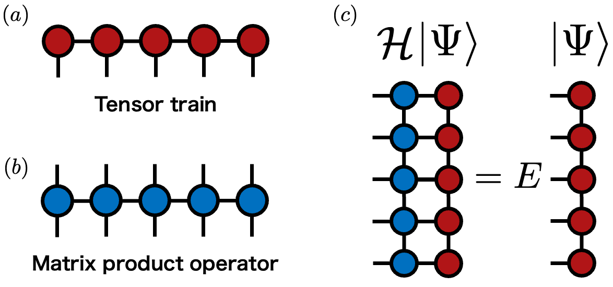
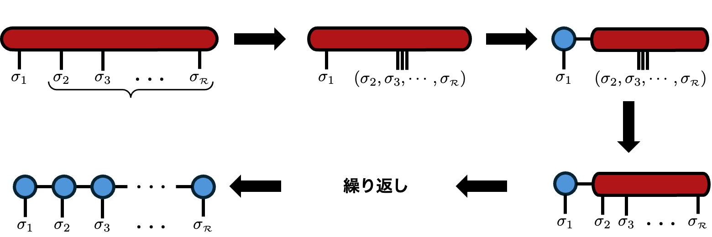

Method
Tensor Train
Tensor Train (TT) は，テンソルネットワークの中でも基本的な 1 次元鎖状の表現です． 高階テンソルを 3 階テンソルの列として表すことで， 低ランク構造を持つ高次元データを少ないパラメータで扱える可能性があります． DMRGの文脈ではMatrix Product State (MPS)と呼ばれ，波動関数を表すことが多いのですが，ここではより一般的なテンソルを対象とするため，Tensor Trainという名称を使います．
TT形式
$R$ 個のインデックス $\boldsymbol{\sigma}=(\sigma_1,\sigma_2,\dots,\sigma_R)$ を持つテンソル $F_{\boldsymbol{\sigma}}$ を考えます． TT形式では，このテンソルを次のように 3 階テンソルの積として表します [1]．
各 $F^{(\ell)}$ は TTコアと呼ばれます． 中間のコアは $F^{(\ell)}_{\alpha_{\ell-1}\sigma_\ell\alpha_\ell} \in\mathbb{C}^{\chi_{\ell-1}\times d_\ell\times\chi_\ell}$ という形を持ちます． $\sigma_\ell$ はローカルインデックス，$\alpha_\ell$ は隣のコアをつなぐボンドインデックスです． ボンドインデックスの次元 $\chi_\ell$ をボンド次元と呼び， $\chi=\max_\ell\chi_\ell$ を TT の代表的なボンド次元として扱うことがあります．
波動関数の例
1 次元状にスピン $s_i$ が並ぶ系の状態は，基底 $\mathopen{|}s_1,s_2,\dots,s_R\rangle$ を用いて次のように展開できます．
係数 $\psi_{s_1s_2\cdots s_R}$ はスピンインデックスの関数であり， そのまま保存すると系の長さ $R$ に対して指数関数的に大きなメモリが必要です． この係数テンソルを TT，物理の言葉では MPS，として近似できれば， 自由度を大きく削減できます．
作用素であるハミルトニアンも，1 次元鎖状のテンソルネットワークとして表すことがあります． この表現は Matrix Product Operator (MPO) と呼ばれます． MPS と MPO を用いると，固有値問題 $\mathcal{H}\lvert\Psi\rangle=E\lvert\Psi\rangle$ や エネルギー期待値 $E=\langle\Psi\rvert\mathcal{H}\lvert\Psi\rangle/\langle\Psi|\Psi\rangle$ をテンソルネットワークの縮約として扱えます．

TT分解
高階テンソルから TT を構成するには， テンソル分解 で見た 「インデックスを結合して行列化し，SVDで分解する」操作を端から順に繰り返します． まず左端のインデックスだけを残し，残りをまとめて行列として見ます．
次に，右側に残ったテンソルのインデックスを一度戻し， $(\alpha_1,\sigma_2)$ を左側にまとめて再び行列化します．
この行列に対して再び SVD と低ランク近似を行います． これを右端まで繰り返すことで，TT形式が得られます．

要素数と低ランク構造
分解前のテンソルのローカル次元をすべて $d$ とすると， 元のテンソルの要素数は $d^R$ です． これは $R$ に対して指数関数的に増大します． 一方，TT形式で保存する要素数は各コアの要素数の和です．
もし十分小さいボンド次元 $\chi$ でよい近似が得られるなら， 必要な要素数は $R$ に対してほぼ線形に増えます． これが TT を使う主な利点です． ただし，どんなテンソルでも小さい $\chi$ で表せるわけではありません． 特異値が速く減衰し，小さなボンド次元で情報を保てるとき， そのテンソルは低ランク構造を持つと言えます．
TT形式での演算
TT形式のまま演算できることも重要です． たとえば TT を定数 $\lambda$ 倍するだけなら，どれか 1 つの TTコアを $\lambda$ 倍すればよく， ボンド次元は変わりません．
2つのTT同士の和や要素積も，圧縮されたTT形式のままで実行可能です．しかし，定数倍の時とは異なりボンド次元は一般に増大します．具体的な操作やボンド次元の変化は[4]を参照ください．
参考文献
このページは，修士論文の第3章をWeb向けに整理したものです． 修士論文PDFは こちら から確認できます．
- I. V. Oseledets, “Tensor-Train Decomposition,” SIAM Journal on Scientific Computing 33, 2295 (2011).
- S. R. White, “Density matrix formulation for quantum renormalization groups,” Physical Review Letters 69, 2863 (1992).
- S. Ostlund and S. Rommer, “Thermodynamic limit of density matrix renormalization,” Physical Review Letters 75, 3537 (1995).
- H. Takahashi, R. Sakurai, and H. Shinaoka, SciPost Physics 18, 007 (2025).